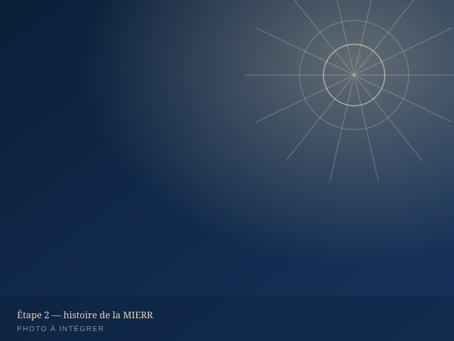
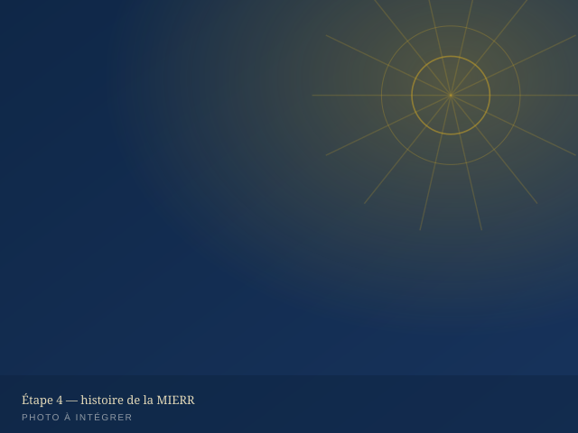
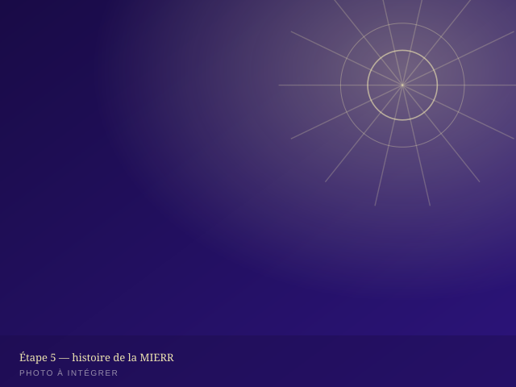

Nos départements
SEMIC, JEMOC, SEMIFIG et les sections locales portent l'action de la MIERR auprès des femmes, de la jeunesse et des jeunes filles.
Trois départements, une même vision
La MIERR s'appuie sur trois départements qui accompagnent les femmes, la jeunesse et les jeunes filles dans leur marche de foi, ainsi que des sections locales réparties selon les besoins de l'œuvre.

Servantes Missionnaires de Christ
Le département des femmes de la MIERR : identité, mission et accompagnement spirituel des femmes de l'église.
- Accompagnement spirituel et enseignement biblique des femmes
- Organisation de la CO-SEMIC (conférence internationale annuelle)
- Actions sociales et solidarité entre les membres
Jeunesse Missionnaire et Ouvriers de Christ
Le département de la jeunesse de la MIERR : formation, engagement et envoi des jeunes au service de l'Évangile.
- Formation biblique et discipulat des jeunes
- Organisation de la CO-JEMOC (conférence internationale annuelle)
- Mobilisation pour l'évangélisation et le service communautaire


Section Missionnaire des Filles Glorieuses
La section dédiée à l'accompagnement, à l'éducation chrétienne et à la protection des jeunes filles au sein de la MIERR.
- Encadrement spirituel et moral des jeunes filles
- Ateliers de formation et d'épanouissement personnel
- Activités communautaires et rencontres régulières
Sections & antennes locales
La MIERR est présente à travers plusieurs sections locales, chacune animée par une équipe pastorale sous la coordination générale de l'œuvre.
[Nom de la section]
[Ville / pays] — [Nom du responsable]
[Nom de la section]
[Ville / pays] — [Nom du responsable]
[Nom de la section]
[Ville / pays] — [Nom du responsable]